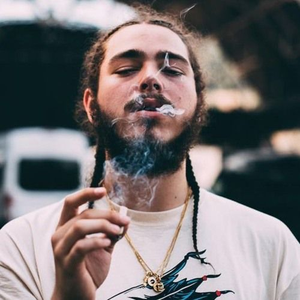

Post Malone
Post Malone nome artístico de Austin Richard Post (Syracuse, EUA, 4 de julho de 1995) é um cantor, compositor e rapper estadunidense. O seu nome se tornou do conhecimento do grande público em fevereiro de 2015, quando lançou seu single de estreia, "White Iverson".